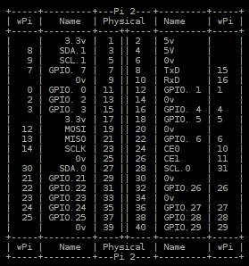

ELEMENT NAME: Set_DI_RPI_JV
DEVELOPED BY: Robinson Javier velásquez EMAIL:
javiervelasquez125@gmail.com COUNTRY: Colombia
DESCRIPTION: Este elemento permite configurar un pin del GPIO de la Raspberry PI como entrada digital y configurar su resistencia interna a 5V ó GND.
Es necesario tener instalado "WiringPi GPIO utility v2.32" ó más reciente para usar este elemento.
WiringPi GPIO utlity viene pre-instalado en Raspbian Jessie, para ver la versión use el comando "gpio -v" en el Terminal de Raspbian.
El elemento fue desarrollado y probado
en Raspberry PI 2 con Raspbian
Jessie. 07-30-16
Este elemento indica si hubo un error y permite activar una opción de depuración, cuando esta opción está activada el elemento lanza una ventana emergente para mostrar lo que está sucediendo con la ejecución del comando.
EJEMPLO BÁSICO ENTRADA DIGITAL:

Puede encontrar el ejemplo en la carpeta de Ejemplos "Raspberry PI", ubicada en la ventana de "Proyectos>VirtualMachines>Raspberry PI ".
Este ejemplo muestra cómo usar el elemento para configurar el GPIO 2 como entrada digital con resistencia interna conectada a GND.
Nota: Para cambiar la conexión de la resistencia de Vcc a GND ó viceversa debe conectar correctamente el pin de entrada "Pull_Up(T)_Pull_Down(F)_in" de acuerdo con sus necesidades, si realiza un cambio en esta configuración guarde el VM y reinicie el VM porque el elemento que configura la entrada solo se ejecuta la primera vez.
ENTRADAS DEL
ELLEMENTO:
1, "Enable_VM_in"(Boolean):
Si es TRUE el elemento ejecuta la configuración (solo la primera vez, ya que no es necesario configurar el pin en cada iteración) , si es FALSE el elemento no ejecuta nada. Este valor se duplica al pin "Enable_VM_out" para que el siguiente VM sea notificado.
2, "wPi_Pin_Number_in"(Integer):
Esta entrada es el número
Wiring PI correspondiente al pin GPIO que desea
configurar como entrada digital, este valor es duplicado al pin de salida "wPi_Pin_Number_out"
para que el siguiente VM sea notificado.
Tabla Wiring PI GPIO (Raspbery PI 2B y 3B)
:

Por ejemplo, si desea configurar el GPIO 2 (Pin físico 13) como entrada digital con resistencia interna conectada a Vcc debe conectar en el pin de entrada "wPi_Pin_Number_in" una constante entera "2" y conectar en la entrada "Pull_UP(T)_Pull_Down(F)_in" una constante booleana TRUE.
3, "Pull_Up(T)_Pull_Down(F)_in"(Boolean):
Esta entrada permite seleccionar la configuración de la resistencia interna para que esté conectada a Vcc ó a GND.
Si es TRUE el GPIO especificado en la entrada "wPi_Pin_Number_in" se configura con resistencia interna conectada a Vcc.
Si es FALSE el GPIO especificado en la entrada "wPi_Pin_Number_in" se configura con resistencia interna conectada a GND.
4, "Debug_Window_Enable_in":
Si es TRUE el elemento lanza una ventana emergente para mostrar lo que está sucediendo con la ejecución del comando y muestra si hay errores.
Si es FALSE no sale la ventana emergente. Este valor se duplica al pin "Debug_Window_Enable_out" para que el siguiente VM sea notificado.
5, "Error_in"(Boolean):
Si es FALSE el elemento se ejecuta, pero si es TRUE el elemento no se ejecuta y pasa el error al pin "Error_Out" para notificar el error al siguiente VM y así prevenir ejecución lenta y más ventanas de error causadas por la propagación de errores.
El último VM de su programa debe manejar ese error con una ventana emergente para notificar el error al usuario y tomar acciones para corregirlo.
SALIDAS DEL
ELEMENTO:
0, "Enable_VM_out"(Boolean):
Esta salida tiene el mismo valor conectado a la entrada "Enable_VM_in" para notificar el siguiente elemento.
1, "wPi_Pin_Number_out"(Boolean):
Esta salida tiene el mismo valor conectado a la entrada "wPi_Pin_Number_in" para notificar el siguiente elemento.
2, "System_out"(String):
Esta salida es la respuesta que viene del Terminal de Raspbian al ejecutar el comando, puede estar vacío dependiendo del comando.
3, "Debug_Window_Enable_out"(Boolean):
Esta salida tiene el mismo valor conectado a la entrada "Debug_Window_Enable_in" para notificar el siguiente elemento.
4, "Error_out"(Boolean):
Este indicador muestra TRUE si hubo errores durante la ejecución de este elemento ó si el valor conectado al pin de entrada "Error_in" era TRUE antes de ejecutarse.
Y muestra FALSE si no hubo errores durante la ejecución de este elemento y el valor conectado al pin de entrada "Error_in" era FALSE antes de ejecutarse.